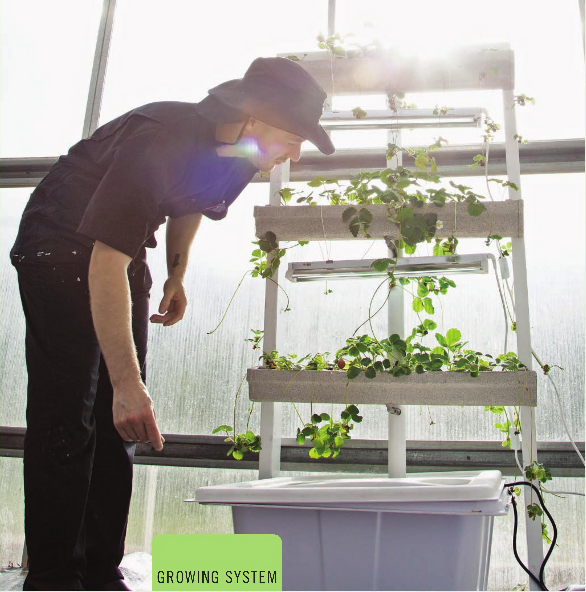

VERTICAL GARDENS VERTICAL GARDENS COME IN ALL shapes and sizes using both soil and hydroponic growing techniques. Vertical gardens are popular for gardeners with limited space because they can maximize the available growing area in a given footprint. Vertical gardens are also popular as living art installments. It is increasingly common to go to a bar, restaurant, office, or school and see a vertical garden used as an edible art installation. There are a few considerations to keep in mind when choosing a vertical garden. First, not all crops are well suited for this production method. Large, top-heavy crops HYDROPONIC GROWING SYSTEMS 115
